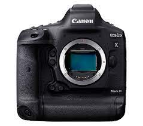
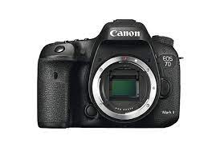
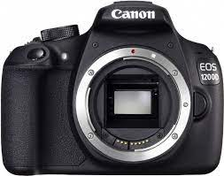

| Canon EOS 1D X DSLR | Canon EOS 7D Mark II DSLR | Canon EOS 12000 DSLR |
|---|---|---|
|  |  |  |
|
The Ultimate DSLR for all professionals.
With the EOS 1DX you accept no compromise. This is a Digital SLR Camera that revolutionises the world of professional photography, bringing you faster DIGICS imaging processing, and superior image quality with its 18.1MP full frame CMOS sensor and standard operation ISO range of 100-S1,200.With a %%-millisecond shutter release,12 frames per second high speed continuous shooting,and 14 frames per second in super high speed ,the EOS 1DX is always ready for action. |
Shaper, faster,built for actions.
Sporting a high-end autofocus system with 65 cross-type focus points, insanely fast 10 fps continuous shooting speed, dual image processors, -3 EV light sensitivity, magnesium alloy construction, and weather sealing, the Canon 7D Mark II is specifically tailored at sports and wildlife photographers. |
Capture magic moments easily.
The Canon 1200D has the technical capabilities to shoot digital videos that may look similar to Hollywood productions. The sensor size is big enough and if you use prime lenses with wide apertures you can mimic what's called a cinematic look.The 1200D is an entry-level DSLR that introduces an 18 MP sensor from the 700D and 1080p HD video to Canon's entry level DSLRs. It replaces the 1100D. |